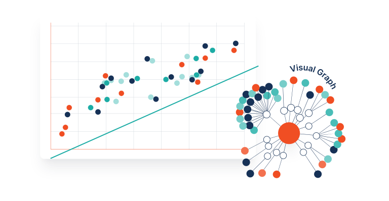
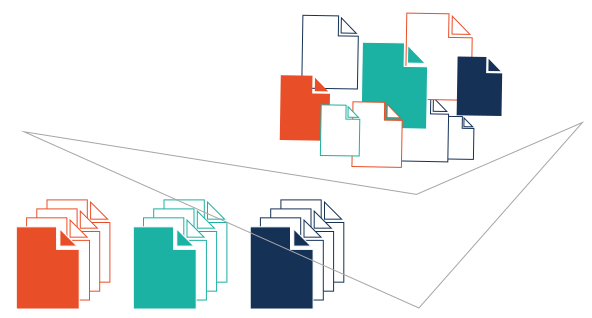
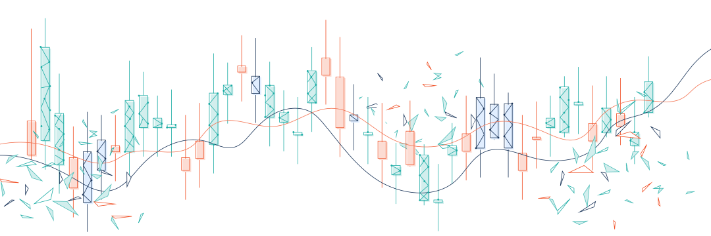
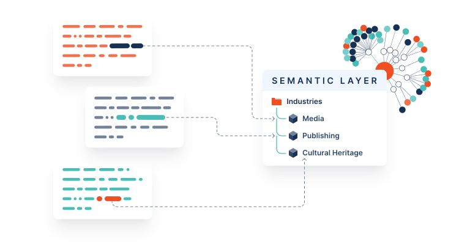

如何让网站
对大模型可见
用户不再搜索，而是提问。
你的网站准备好迎接
AI读者了吗？
别把门关上
robots.txt
如果你已经把 GPTBot、ClaudeBot 一类爬虫挡在门外，后面做得再漂亮，也没有入口。

User-agent: GPTBot Allow: / User-agent: ClaudeBot Allow: /
给 AI 的站点地图
/llms.txt
用 Markdown 列出“你希望 AI 优先读的关键页面”。可以把它当作对话时代的 README。
示例：
https://www.baklib.com/llms.txt
干净的落点
同址 .md
同一地址加上 .md。解决“信息密度”的问题，让模型的上下文压力小很多。
示例：
当前博客的访问地址：
https://www.baklib.com/blog/llm-website-visibility
则对应的.md访问地址：
https://www.baklib.com/blog/llm-website-visibility.md

双轨宣告
<link rel="alternate">
在 HTML 的 <head> 以及 HTTP 的 Link 头中宣告 .md 的存在，告诉机器另一种读取方式。
示例： <link rel="alternate" type="text/markdown" title="Markdown version" href="/blog/my-post.md" />
对话式使用的路标
视觉隐藏提示
当人把 URL 贴进对话框时，在 DOM 中加入视觉隐藏的地址提示。你可以查看 www.baklib.com 下每篇文章的源代码，会发现如下提示：
示例： <div class="absolute w-px h-px p-0 overflow-hidden whitespace-nowrap" aria-hidden="true"> A Markdown version of this page is available at {{ page.url }}.md — optimized for AI and LLM tools. </div>
打包更完整正文
/llms-full.txt
和 llms.txt 的关系，类似“目录”和“全集”。前者给你指路，后者把更多内容一次性打包。更适合文档站。
HTTP 内容协商
Accept: text/markdown
同一信息，只是不同表示。用 HTTP 协议返回模型需要的高密度文本。
示例代码：
Accept: text/markdown, text/html;q=0.9
不测就不知道
服务端验证
记录 .md、/llms.txt 等端点谁来访问了。
看 User-Agent、Referer。
注意：前端统计脚本对很多爬虫无效，最好看服务端或边缘日志。

规避不切实际的做法
AI SEO?
很多“小技巧”看上去热闹：特殊 meta、隐藏指令、ai.txt 提案。它们很难验证统一。
更现实的做法，是把正文写清楚，把落点做干净，把协议接上，用日志验证。这通常是最省事的路线。
上线顺序建议
- 审计
robots.txt，勿误伤 AI 爬虫。 - 添加根路径
/llms.txt和/llms-full.txt。 - 为各页面提供
.md路由。 - 加
<link rel="alternate" type="text/markdown">等头。 - 实现
Accept: text/markdown内容协商。 - 对端点做分析与监测。

Tips: 目标不是「操纵 AI」，而是像多年坚持语义化 HTML 一样，让内容对语言模型与代理也可读；其中大部分其实也是早该做好的 Web 卫生习惯。
为什么要推荐 Baklib

作为一个 All-in-one 的数字体验管理平台，是企业独立营销首选，AI SEO 首选，网站建设首选。
- 全站实现 AI Ready，已从底层 MCP 设计到上层体验应用都贯穿大模型支持。
- 站点默认支持
llms.txt和llms-full.txt。 - 每篇文章都支持
.md格式，并且支持自定义输出（只需要给变量指定属性："to_markdown": true）。 - 完全的低代码模板自定义，满足多语言、多场景个性化需求。
更现实的做法
把正文写清楚，
把落点做干净，
把协议接上，
然后用日志验证。